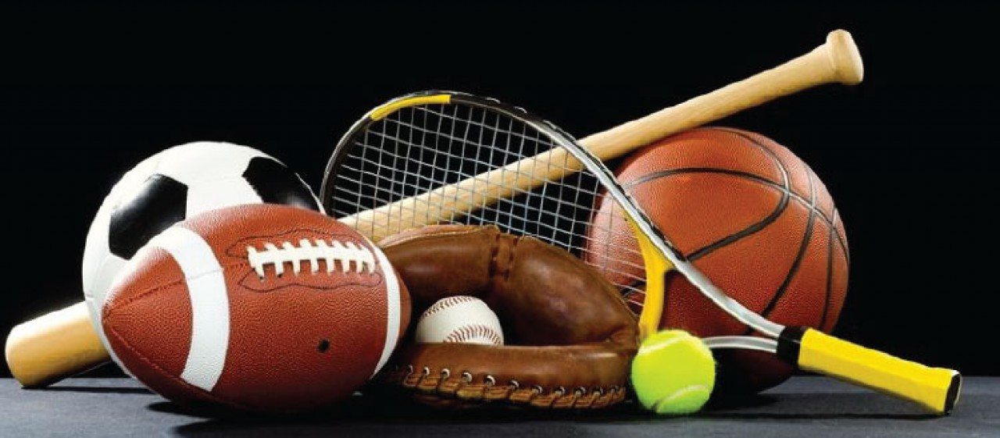
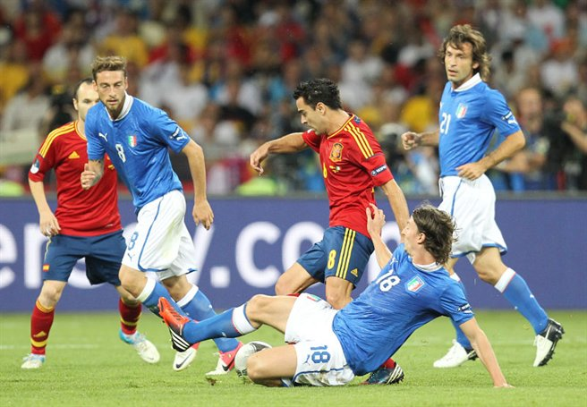
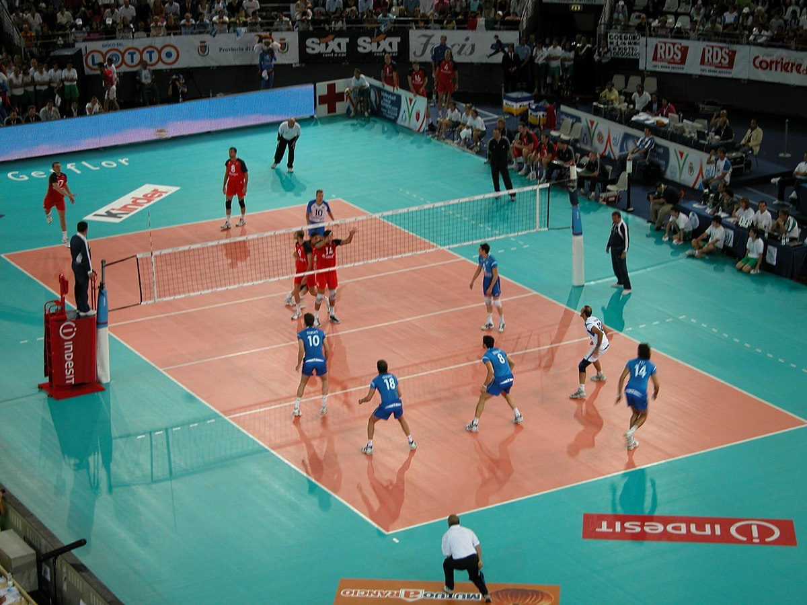
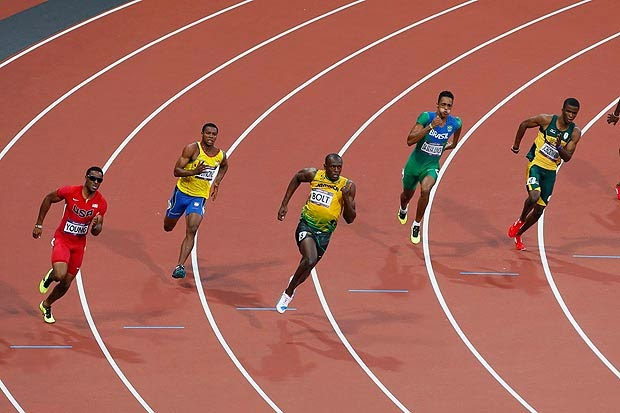

Deportes

futbol-voleibol
atletismo-baseball
Esta página fue creada con el fin de
informar sobre 4 deportes, Futbol, Voleibol, Atletismo y Baseball.
Hablaremos de las noticias más relevantes de estos deportes, tanto
como de jugadores y noticias externas.
¿En que consiste el futbol?
Es un deporte de equipo jugado entre dos conjuntos de once jugadores
cada uno y algunos árbitros que se ocupan de que las reglas se apliquen
correctamente.
¿En que consiste el voleibol?
Es un deporte que se juega con una pelota y en el que dos equipos,
integrados por seis jugadores cada uno, se enfrentan sobre un área de juego separada por una red central
¿En que consiste el atletismo?
Es considerado el deporte organizado más antiguo del mundo. Abarca numerosas disciplinas
agrupadas en carreras, saltos, lanzamientos y pruebas combinadas.
¿En que consiste el baseball?
Es un deporte de equipo jugado entre dos equipos de nueve jugadores cada uno.
Se juega en un gran campo cubierto completamente por césped natural o artificial.
  